정밀측정산업기사 (2014-03-02 기출문제)
1과목: 정밀계측
1. 다음 측정오자 원인 중 외부조건(환경)에 의한 오차에 해당하는 것은?
- 측정자의 심리적 상태에서 오는 오차
- 실온이나 채광으로 인한 오차
- 계기 마모에 의한 오차
- 시차(時差)
(정답률: 85%)

2. 그림과 같이 A에서 B까지 210mm 이동시킨다면, 테이퍼 값이 1/30 일 때 A점과 B점의 다이얼게이지 눈금차는 얼마이어야 되는가?
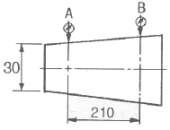
- 0.88mm
- 1.75mm
- 3.50mm
- 7.00mm
(정답률: 54%)
3. 측정량의 변화에 대하여 지침의 흔들림의 크기를 말하며 그 확대율을 의미하는 것은?
- 감도
- 눈금선 간격
- 지시 범위
- 흔들림 오차
(정답률: 77%)
4. 표준형 버니어캘리퍼스 사용 시 유의사항에 대한 설명으로 옳은 것은?
- 아베의 원리에 적합한 구조가 아니므로 될 수 있는 대로 턱의 안쪽(어미자에 가까운 쪽)에서 측정하는 것이 좋다.
- 아베의 원리에 적합한 구조가 아니므로 될 수 있는 대로 턱의 바깥쪽(어미자에서 먼 쪽)에서 측정하는 것이 좋다.
- 아베의 원리에 적합한 구조이므로 될 수 있는 대로 턱의 안쪽(어미자에 가까운 쪽)에서 측정하는 것이 좋다.
- 아베의 원리에 적합한 구조이므로 될 수 있는 대로 턱의 바깥쪽(어미자의 먼 쪽)에서 측정하는 것이 좋다.
(정답률: 82%)
5. 그림과 같은 원추의 각도를 측정하는데 있어서 α를 구하고자 할 때 그 식으로 옳은 것은?
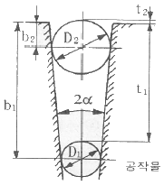
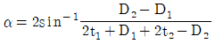
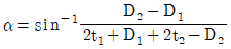
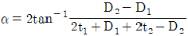
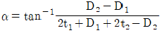
(정답률: 58%)
6. 게이지블록의 평면도를 옵티컬 플랫으로 측정한 결과 간섭무늬 간격이 2.5mm, 휨량이 0.5mm 를 얻었다면 평면도는 몇 μm인가? (단, 빛의 파장은 0.6μm이다.)
- 0.6
- 0.06
- 0.3
- 0.03
(정답률: 69%)
7. 다음 중 정확도는 좋지만, 정밀도가 좋지 않은 것은? (단, X로 표시된 좌표 위치가 참값이다.
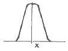
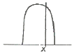
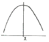
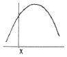
(정답률: 85%)
8. 컴퓨터제어를 통한 3차원 측정기의 일반적인 사용 효과로 거리가 먼 것은?
- 기준면 설이 컴퓨터에 의해 되기 때문에 측정 능률이 향상된다.
- 오차 요인이 전혀 없어 오차가 없는 정확한 측정 데이터를 얻을 수 있다.
- 컴퓨터에 의하여 데이터가 연산처리 되기 때문에 자동화의 효과가 있다.
- 복잡한 자유곡면을 연속적으로 신속 정확하게 측정할 수 있다.
(정답률: 87%)
9. 다음 중 오토콜리메이터로 측정할 수 있는 항목으로 가장 거리가 먼 것은?
- 공작기계 베드면의 진직도
- 정밀 정반의 평면도
- 공작기계 베드면의 직각도
- 원통면의 윤곽도
(정답률: 71%)
10. 나사의 유효지름을 측정하고자 할 때 가장 적합하지 않은 방법은?
- 삼침법(三針法)을 이용하여 측정
- 전기 마이크로미터를 이용하여 측정
- 공구 현미경을 이용하여 측정
- 나사 마이크로미터를 이용하여 측정
(정답률: 78%)
11. 다음 중 간접 측정으로 볼 수 없는 것은?
- 사인바에 의한 각도의 측정
- 롤러와 게이블록에 의한 테이퍼 측정
- 마이크로미터에 의한 원통 측정
- 삼침법에 의한 나사의 유효지름 측정
(정답률: 75%)
12. 어떤 부품을 버니어 마이크로미터로 측정하였을 때 그림과 같이 나타났다면 이 부품의 길이는 몇 mm 인가?
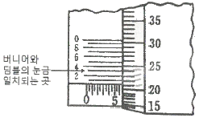
- 6.243
- 7.243
- 6.213
- 7.213
(정답률: 74%)
13. 1250 mm의 게이지블록을 양 끝면이 항상 평행하게 하기 위해서2개의 지지점으로 지지할 때 끝면에서 하나의 지지점까지의 거리(airt point)는 몇 mm인가?
- 298.250mm
- 279.000mm
- 264.125mm
- 275.375mm
(정답률: 72%)
14. 수준기에서 한 눈금의 길이는 2mm 이고, 이 수준기의 곡률반지름°이 40m 일 경우 수준기 한 눈금의 경사에 상당하는 각도는 약 몇 초(“)인가?
- 10.3
- 13.4
- 16.8
- 20.4
(정답률: 45%)
15. 다음 중 내측(구멍)을 검사하는 게이지가 아닌 것은?
- 봉 게이지
- 원통형 플러그 게이지
- 테보 게이지
- 플러시 핀 게이지
(정답률: 64%)
16. 다음 중 이론적으로 가장 좋은 진원도 측정방법은?
- 반지름법
- 지름법
- 점법
- 2 점법
(정답률: 77%)
17. 각도의 측정에서 1 라디안(radian)은 약 몇 도(°) 인가?
- 114.192°
- 94.694°
- 67.257°
- 57.296°
(정답률: 80%)
18. 게이지블록의 일반적인 특징에 관한 설명으로 옳지 않은 것으?
- 광파에 의하여 그 길이를 측정할 수 있다.
- 다른 도구가 필요치 않고 직접적으로 길이를 측정할 수 있다.
- 측정면이 서로 밀착하는 특성을 가지고 있다.
- 표시하는 길이의 정도가 아주 높다.
(정답률: 71%)
19. 다음 중 3차원 측정기에서 축의 이동 마찰을 최소화하고, 각 축의 운동 정밀도를 향상시키기 위해 주로 사용되고 있는 베어링은?
- 오일리스 베어링
- 니들 베어링
- 워터 베어링
- 정압 공기베어링
(정답률: 69%)
20. 표면거칠기에서 단면곡선의 최대높이에 해당하는 파라미터는?
- Pz, Rz, Wz
- Pa, Ra, Wa
- Pc, Rc, Wc
- Pp, Rp, Wp
(정답률: 83%)
2과목: 재료시험법
21. 비틀림시험에서 가로탄성계수 G는 세로탄성계수 E와 프아송 비 ｕ와의 사이에 어떤 식이 성립하는가?
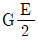
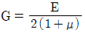
- G=2E(1+μ)
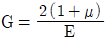
(정답률: 72%)
22. 인장시험기에서 연성파괴(ductile fracture)에 관한 설명에 해당하지 않는 것은?
- 금속이 상담한 에너지를 소비하면서 서서히 찢어짐(tearing)에 의하여 파단이 일어난다.
- 인장에서 연성파괴는 네킹(necking)이라는 단면적의 국부적인 감소에 의하여 진행한다.
- 연성균열의 경우 그 선단이 파괴의 개시점을 향하는 쉐브론 형태(chevron pattern)로 관찰되는 경우가 많다.
- 파괴의 형상은 소위 컵 앤드 콘(cup and cone)형으로 나타난다.
(정답률: 68%)
23. 샤르피 충격시험기에 관한 설명으로 틀린 것은?
- 장치가 비교적 작아서 취급하기 쉽다.
- 시편파괴에 요하는 에너지는 간단히 구할 수 있다.
- 시편을 설치할 때에는 시편의 노치부를 지지대의 중앙에 일치시키고 노치부의 정면을 정확히 때려야 한다.
- 지정 시험온도보다 기온차이가 클 경우 지정 시험온도의 액조에서 10분 이상 시편을 유지시킨 후 5초 이내에 시험을 시행하도록 한다.
(정답률: 58%)
24. 대면각이 136°의 다이아몬드 피라미드형 압입자로 일정 하중으로 눌러 생긴 압입자국의 대각선의 길이를 이용하여 경도를 측정하는 시험기는?
- 쇼어 경도시험기
- 브리넬 경도시험기
- 로크웰 경도시험기
- 비커스 경도시험기
(정답률: 76%)
25. 크리프 한도(creep limit)의 이론적인 정외를 옳게 설명한 것은?
- 특정 온도, 특정 응력에서 크리프 속도가 0(zero)이 되는 시간을 말한다.
- 특정 온도에서 어떤 시간 후에 크리프 속도가 0(zero)이 되는 응력을 말한다.
- 특정 온도, 특정 응력에서 크리프 속도가 처음 크리프 속도의 10%이하로 되는 응력을 말한다.
- 특정 온도에서 어떤 시간 후에 크리프 속도가 처음 크리프 속도의 10%이하로 되는 응력을 말한다.
(정답률: 71%)
26. 로크웰 경도시험 중 시험편에 관한 설명으로 틀린 것은?
- 제품이나 재료 규격에서 달리 규정하지 않는 한 시험은 표면이 편평해야 한다.
- 산화물이나 이물질 특히 윤활제가 완전히 제거된 시험면에서 해야 한다.
- 시험편 준비과정에서 열이나 냉간가공에 의한 표면 경도의 변화가 되도록 생기지 않도록 해야 하며, 누르개 자국의 깊이가 깊을수록 이 영향이 커지므로 특히 주의해야 한다.
- 시험편의 최소 두께는 원추형 누르개로 시험할 경우는 누르개 자국 깊이의 10배 이상, 구형 누르개로 시험할 경우는 15배 이상이 되어야 한다.
(정답률: 66%)
27. 다음 시험 항목 중 동적하중이 가해지는 시험에 해당되는 것은?
- 인장시험
- 피로시험
- 크리프시험
- 비틀림시험
(정답률: 72%)
28. 자분검사시험에서 그림과 같이 시험품의 구멍 등에 철심을 통해 놓고 그 철심에 교류 자속을 흘림으로써 시험품 구멍 주변에 유도 전류를 발생시켜 그 전류가 만드는 자장에 의해서 시험품을 자화시키는 방법은?
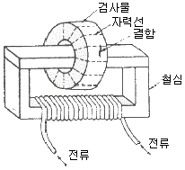
- 축통전법
- 극간법
- 코일법
- 자속관통법
(정답률: 75%)
29. 비틀림시험에서 비틀림 모멘트를 측정하는 방법이 아닌 것은?
- 펜듈럼식
- 유압식
- 레버식
- 탄성식
(정답률: 52%)
30. 지름 30mm, 길이 1m인 연강의 한 끝을 고정하는 다른 끝에 490Nㆍm의 비틀림 토크가 작용할 때 이 봉에 생기는 최대 전단응력은 몇 MPa 인가?
- 9.3
- 92. 4
- 18.2
- 183. 5
(정답률: 55%)
31. 기계재료 시험에서 표점거리가 50mm의 재료를 인장시험하여 전단 후 표점거리가 60mm가 된 재료의 연신율은 몇 %인가?
- 17%
- 20%
- 83%
- 120%
(정답률: 77%)
32. 충격시험을 충격 하중의 횟수와 충격 하중이 작용하는 방식에 따라 분류할 때 충격 하중의 횟수에 따라 분류되는 시험은?
- 충격 압축시험
- 충격 굽힘시험
- 충격 비틀림시험
- 단일 충격시험
(정답률: 72%)
33. 재료의 인성(toughness)과 취성(brittleness)을 모두 평가하기에 가장 적당한 시험법은?
- 인장시험
- 경도시험
- 내마모시험
- 충격시험
(정답률: 79%)
34. 브리넬 경도시험기의 특징에 관한 설명으로 틀린 것은?
- 시편 윗면의 상태에 의하여 측정치에 큰 오차가 발생하지 않는다.
- 측정시간이 비교적 짧다.
- 커다란 압입자국을 얻을 수 있으므로 불균일한 재료의 평균적인 경도값은 측정할 수 있다.
- 간단한 장치로 현장에서 쉽게 경도를 측정할 수 있다.
(정답률: 50%)
35. 경도시험을 시험하는 방법에 따라 크게 3가지로 분류하는데 이에 속하지 않는 것은?
- 압입 경도시험
- 굽힘 압축경도시험
- 반발 경도시험
- 긋기 경도시험
(정답률: 66%)
36. 마모의 형태 중 주로 기어 또는 베어링에서 주로 발생하는 마모 형태는?
- 응착마모(adhesive wear)
- 연삭마모(abrasive wear)
- 피로마모(fatigue wear)
- 부식마모(corrosion wear)
(정답률: 65%)
37. 초음파검사시험의 방법 중 공기 중에서 초음파 펄스를 한쪽 면에서 입사시키고, 타 단면 및 내부r55 부터의 반사파를 동일면상의 탐촉 아서 발생하는 전압 펄스를 브라운관상에서 관찰하는 방법은?
- 투과법
- 공진법
- 펄스 반사법
- 수침 탐사법
(정답률: 75%)
38. 재료를 완전한 탄성체로 생각할 때 노치부분에 생긴 최대 응력을 σmax라 하고, 노치가 없을 때의 응력을 σn이라 할 때 이 비
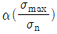
를 응력집중계수라고 한다. 이에 대한 설명으로 옳은 것은?- 응력집중계수는 노치의 형상이나 재료의 종류와 관계가 없다.
- 응력집중계수는 노치의 형상에 따라 결정되며 재료의 종류와는 관계가 없다.
- 응력집중계수는 재료의 종류에 따라 결정되며 노치의 형상과는 관계없다.
- 응력집중계수는 노치의 형상과 재료의 종류에 따라 결정된다.
(정답률: 53%)
39. 가한 하중을 시편이 변형한 후의 실제 단면적으로 나눈 값을 무엇이라고 하는가?
- 진응력(true stress)
- 공칭응력(nominal stress)
- 1차 응력(primary stress)
- 잔류응력(residuel stress)
(정답률: 67%)
40. 굽힘장치에서 재료의 단면2차모멘트(I)가 200cm4인 연강 시편을 2개의 받침대에 올려놓고 두 받침대의 정중앙에 하중을 7.8KN로부터 11.8KN로 증가시킨 결과 중앙부 최대처짐량은 0.017cm만큼 변화하였다. 이 재료의 세로탄성계수는 몇 N/cm2인가? (단, 받침대간의 거리는 100cm2이다.)
- 24.5×106
- 2.45×106
- 49.0×106
- 4.9×106
(정답률: 42%)
3과목: 도면해독
41. 길이 치수 기입에서 사각형 안에 표시된 50이란 치수는 무엇을 위미하는가?
- 한 변의 길이가 50mm인 정사각형이다.
- 길이 50mm에 대하여 일반 공차가 적용된다.
- 길이가 이론적으로 정확하게 50mm이다.
- 참고치수가 50mm이다.
(정답률: 80%)
42. 그림에서 홈 부위의 실체 치수가 37.9로 측정되었을 경우 이 부분에 허용되는 직각도 공차는 얼마인가?
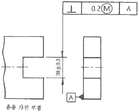
- 0.2
- 0.3
- 0.4
- 0.5
(정답률: 67%)
43. 도면의 종류 중 판금 작업시 주로 이용되는 도면으로 대상물을 구성하는 면을 평면으로 펴서 나타낸 도면을 무엇이라고 하는가?
- 스케치도
- 투상도
- 확산도
- 전개도
(정답률: 81%)
44. 다음에서 나타낸 선의 종류 중 “가공 전 또는 가공후의 모양을 표시하는 선”으로 사용되는 선은?
- 숨은선
- 파단선
- 외형선
- 가상선
(정답률: 76%)
45. 어떤 축의 진직도 공차가 ø0.01/100으로 도시되어 있다. 이 축의 전체 길이가 400mm이면, 축 전체길이에 대한 진직도 오차는 최대 몇 mm까지 되는가?
- 0.04
- 0.08
- 0.16
- 0.32
(정답률: 52%)
46. 기하 공차에서 평행도가 전체 면에 대한 공차가 0.08이고, 지정길이 100에 대한 공차가 0.01일 때 바르게 표시된 것은?
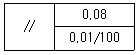
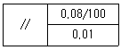
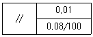
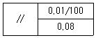
(정답률: 72%)
47. 다음 도면에서 가공한 축의 지름이 ø50.03인 경우 허용되는 진직도 공차는 얼마인가?
- 0.03mm
- 0.⑤mm
- 0.07mm
- 0.10mm
(정답률: 61%)
48. 헐거운 끼워맞춤에서 구멍의 최대 허용치수와 축의 최소 허용치수의 차이는?
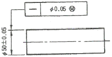
- 최대 틈새
- 최소 틈새
- 최대 죔새
- 최소 죔새
(정답률: 76%)
49. 그림과 같이 대상물의 구멍, 키, 홈 등과 같이 한 부분의 모양을 도시하는 것으로 충분할 경우에 사용되는 투상도는?
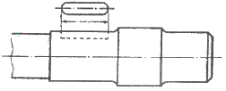
- 보조 투상도
- 회전 투상도
- 국부 투상도
- 부분 투상도
(정답률: 69%)
50. 그림은 기하 공차에서 무엇을 나타내는 것인가?
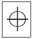
- 동심도
- 원통도
- 진원도
- 위치도
(정답률: 85%)
51. 기하공차의 분류 중 모양 공차에 해당되는 것은?
- 원주 흔들림 공차
- 원통도 공차
- 대칭도 공차
- 위치도 공차
(정답률: 73%)
52. 등각투상법으로 그릴 경우 좌우의 각도(θ)는 얼마인가?
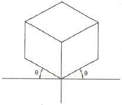
- 15°
- 30°
- 45°
- 60°
(정답률: 68%)
53. 탄소강 단강품의 재료 기호로 옳은 것은?
- STS 11
- SW-A
- GCD 350
- SF 390 A
(정답률: 54%)
54. 35±0.⑤로 표시된 공차의 위 치수허용차는?
- 0.⑤
- 0.1
- 35.⑤
- 34.95
(정답률: 63%)
55. 다음과 같이 구멍과 축의 끼워 맞춤을 표기할 때 나타낸 치수 중 ø50H7의 공차가
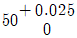
일 때 ø50h7의 공차는 얼마가 되겠는가?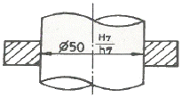
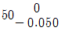
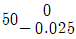
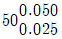
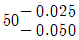
(정답률: 83%)
56. KS 기하공차 중 자세 공차의 종류에 해당하는 것은?
- 진직도 공차
- 평행도 공차
- 평면도 공차
- 원통도 공차
(정답률: 66%)
57. 누수치수기입을 할 때 기점 기호로 옳은 것은?
- ○
- ●
- □
- ■
(정답률: 70%)
58. 다음 도면을 보고 기하공차에 관련한 설명으로 틀린 것은?
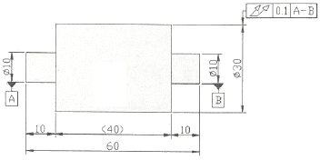
- 온 흔들림 공차를 나타낸 것이다.
- 축직선 A-B로 원통 부분을 회전시켰을 때에 원통 표면위에 임의의 점에서 0.1mm의 규제값을 가진다.
- 60mm 전체길이에 대한 흔들림을 규제한 것이다.
- A와 B는 데이텀을 나타낸다.
(정답률: 76%)
59. 다음 부품에서 동축도 규제형체의 지름이 20.0, 데이텀(A) 원통 지름이 40.0일 때 허용되는 동축도 허용 공차는?
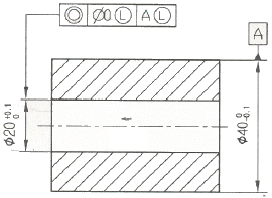
- 0.20
- 0.40
- 0.60
- 0.10
(정답률: 59%)
60. 다음 중 흔들림 공차에 대한 설명으로 틀린 것은?
- 흔들림 공차는 데이텀이 필요 없는 공차다.
- 원주 흔들림 공차와 온 흔들림 공차가 있다.
- 온 흔들림을 규제하는 이중 화살표는 표면의 두 방향인 원형과 직선방향 모두에 적용됨을 의미한다.
- 흔들림 오차는 일반적으로 제품을 V블록이나 맨드릴(mandrel) 등에서 360° 회전시키면서 다이얼 인디 케이터를 표면에 접촉시켜 측정한다.
(정답률: 71%)
4과목: 정밀가공학
61. 선반 작업에서 가늘고 길이가 긴 가공물 작업시 진동으로 인하여 정밀한 가공할 수 없을 때 사용하는 것은?
- 면판
- 돌리개
- 심봉
- 방진구
(정답률: 79%)
62. 연삭작업에서 연삭력이 300N, 연산속도가 1000m/mim일 때 연삭동력은 약 몇 kW인가?
- 3.3
- 4.4
- 5.0
- 6.7
(정답률: 48%)
63. 액체 호닝(honing) 가공에 대한 설명으로 틀린 것은?
- 연마제를 가공액과 함께 고속으로 분사하여 공작물 표면을 매끈하게 한다.
- 녹이나 흑피, 유지 등을 제거하는 세정(洗淨)작용도 한다.
- 기계 가공에서 생긴 지느러미(fin)를 절삭 제거하는 가공법이다.
- 피닝 효과가 있어서 가공물의 피로강도를 향상시킬 수 있다.
(정답률: 68%)
64. 나사 연삭을 하기 위하여 숫돌을 나사 모양으로 만드는 작업과 가장 관계 깊은 용어는?
- 드레싱(Dressing)
- 글레이징(Glazing)
- 트루잉(Truing)
- 로딩(Loading)
(정답률: 61%)
65. 슈퍼피니싱(super finishing) 가공에 대한 설명으로 틀린 것은?
- 입도가 작고 연한 숫돌에 적은 압력으로 가압하면서 가공물에는 이송과 동시에 숫돌에 진동을 주어 표면 거칠기를 향상시키는 가공이다.
- 숫돌 절삭날의 자생작용이 크고 단시간에 비교적 평활한 면을 만들 수 있다.
- 철강 종류에는 GC 계열 숫돌을, 주철 종류에는 WA계열 숫돌이 가공에 좋을 것으로 알려져 있다.
- 가공액은 석유나 경유를 주성분으로 하여 기계유를 첨가하여 사용한다.
(정답률: 66%)
66. 절삭면적을 표시하는 식으로 옳은 것은?
- 절삭속도×절삭 깊이
- 절삭속도×이송
- 절삭속도×절삭 깊이×칩 단면적
- 이송×절삭 깊이
(정답률: 70%)
67. 정밀 보링머신에 대한 설명 중 틀린 것은?
- 표면거칠기가 작은 우수한 내면을 얻는데 주로 사용된다.
- 포신과 같은 구멍이 큰 가공에 적합하다.
- 다이아몬드 또는 초경합금을 절삭공구재료로 사용한다.
- 고속 회전 및 정밀한 이송기구를 갖추고 있다.
(정답률: 63%)
68. 방전 가공시 전극 재료로 적합하지 않은 것은?
- 구리
- 스트론튬
- 흑연
- 세라믹
(정답률: 65%)
69. 다음 중 일반적으로 밀링 머신에서 할 수 있는 작업으로 볼 수 없는 것은?
- 총형 가공
- 윤곽 가공
- 기어 가공
- 널링 가공
(정답률: 62%)
70. 전해연마의 특징에 관한 설명으로 잘못된 것은?
- 가공면에는 방향성이 없다.
- 복잡한 형상의 공작물에 대해서도 가공이 가능하다.
- 주철에 대해서도 광택 있는 가공면을 얻을 수 있다.
- 전기도금의 반대 현상을 이용한 가공이다.
(정답률: 52%)
71. 일반적인 밀링 머신에서 단식 분할법으로 원주를 8등분으로 분할하고자 할 때 분할 크랭크는 몇 회전씩 회전시켜 가공하면 되는가?
- 4회전
- 5회전
- 6회전
- 8회전
(정답률: 68%)
72. 밀링가공에서 커터의 지름이 100mm, 커터의 날수가 6개인 정면 밀링커터로 길이 400mm의 공작물을 절삭할 때 가공시간은 약 몇 분(min)인가? (단, 절삭속도는 100m/min, 날 1개당 이송은 0.1mm이다.)
- 1.6분
- 2.6분
- 3.2분
- 5.4분
(정답률: 47%)
73. 밀링 머신으로 가공할 때 단위시간에 절삭되는 칩의 체적(cm3/min)을 구하는 일반적인 식은? (단, b:정삭 폭(mm), t:절삭 깊이(mm)이고, f:분당 이송(mm/min)이다.)
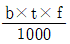
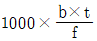
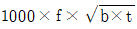
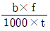
(정답률: 70%)
74. 다음 중 선반의 연동척에 대한 일반적인 설명으로 옳은 것은?
- 조(jaw)가 각자 움직이며 중심 잡는데 시간이 걸린다.
- 사용 후에는 가공물에 잔류 자기가 남아있을 수 있다.
- 스크롤(scroll) 척 이라고도 하며 조임이 약한 편이다.
- 편심가공 시에 편리하며 가장 많이 사용되는 척이다.
(정답률: 61%)
75. 센터리스 연삭작업에서 연삭숫돌 지름이 500mm, 조정숫돌(regulating wheel)의 지름이 300mm일 때, 숫돌축이 5°의 경사를 이루고 있다. 연삭숫돌의 회전수가 250rpm이고 조정숫돌의 회전수는 200rpm인 경우 이송속도는?
- 16.42m/min
- 12.63m/min
- 15.24m/min
- 18.15m/min
(정답률: 46%)
76. 전통적인 연삭작업은 재료제거율이 낮은 편이나 연삭 깊이를 깊게 하고 이송속도를 작게 함으로써 재료 제거율을 대폭으로 높인 연삭작업을 무엇이라 하는가?
- 플런지 연삭
- 트래버스 연삭
- 센터리스 연삭
- 크리프 피드 연삭
(정답률: 42%)
77. 선반에서 각도가 크고, 길이가 짧은 테이퍼 가공을 할 때 가장 적합한 방법은?
- 복식 공구대를 이용한다.
- 심압축을 편위시킨다.
- 백기어를 사용한다.
- 모방 가공 장치를 사용한다.
(정답률: 55%)
78. 절삭 가공시 절삭온도의 측정방법으로 거리가 먼 것은?
- 칩(chip)의 형태에 의한 방법
- 삽입된 열전대에 의한 방법
- 칼로리미터에 의한 방법
- 복사고온계에 의한 방법
(정답률: 65%)
79. 절삭속도를 증가시키면서 공구수명을 시험하였더니 절삭속도가 62m/mim일 때 공구수명은 120min, 절삭속도가 100m/min일 때 공구수명은 18min이었다. Taylor 공구수명식(VTn=C)의 공구수명상수 C값은 약 얼마인가? (단, 다른 조건은 일정함)
- 107
- 207
- 307
- 407
(정답률: 54%)
80. 연삭숫돌 결합제의 구비조건이 아닌 것은?
- 입자 사이에 기공이 없어야 한다.
- 결합능력을 필요에 따라 조절할 수 있어야 한다.
- 고속회전에서도 파손되지 않아야 한다.
- 연삭액에 대하여 안전성이 있어야 한다.
(정답률: 60%)